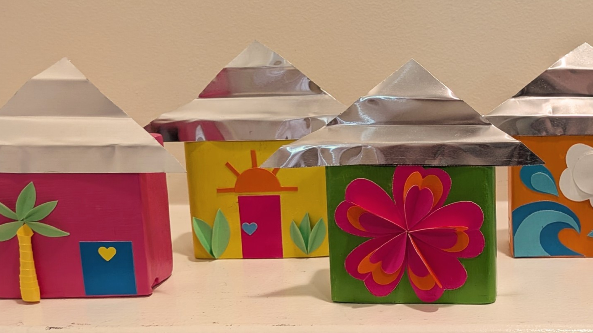
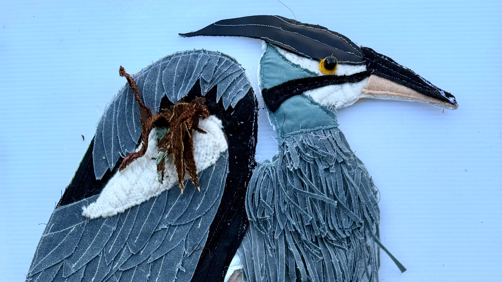
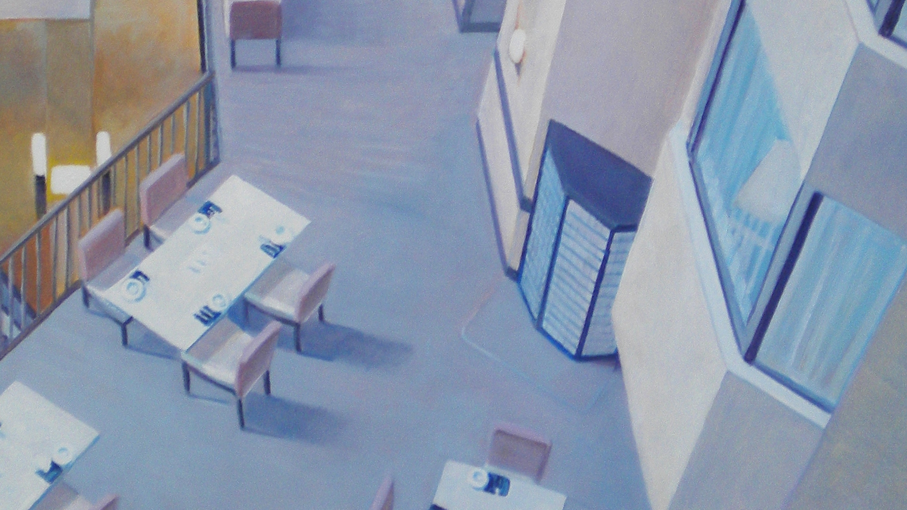
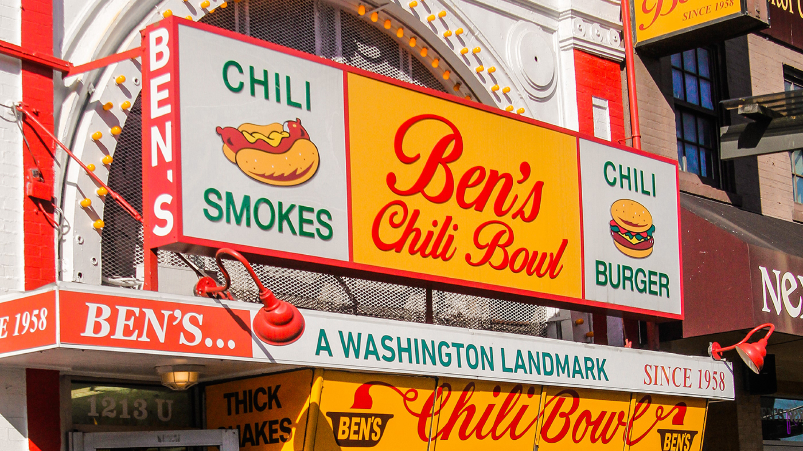
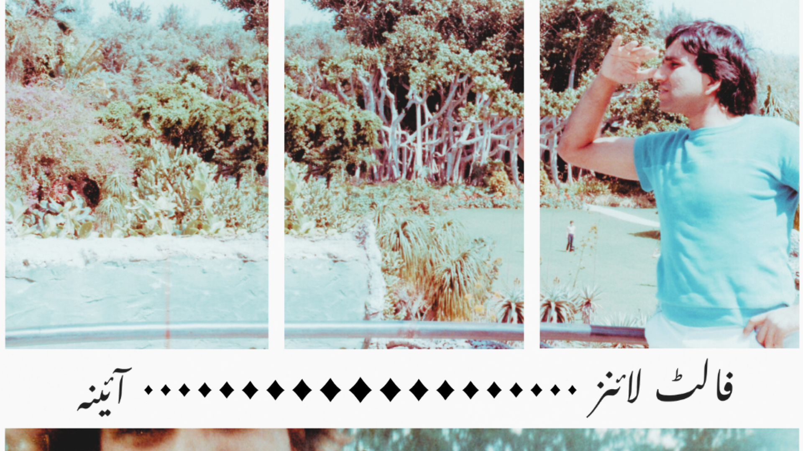
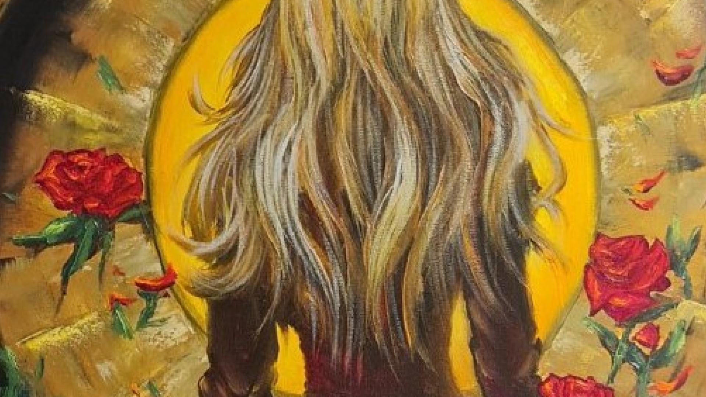
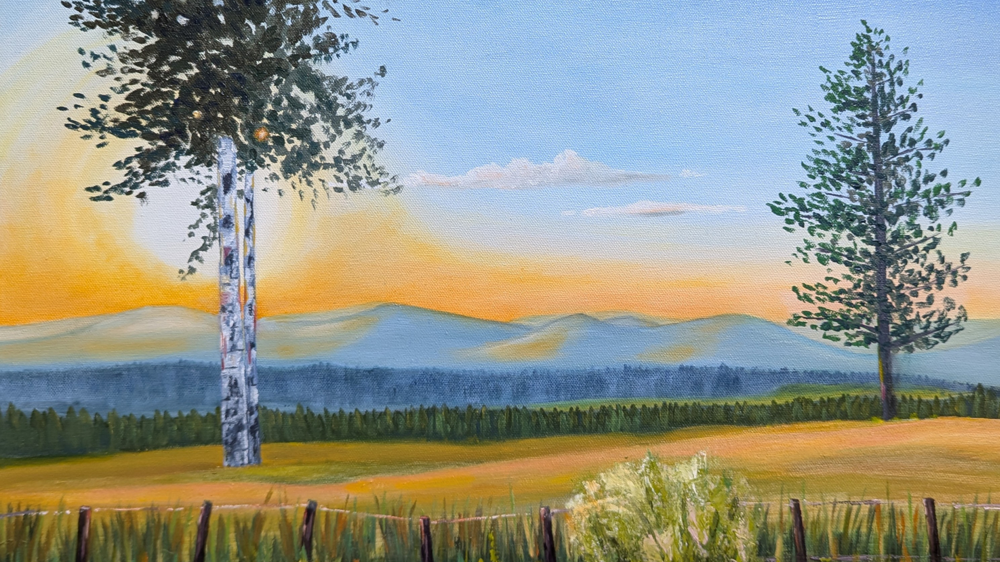
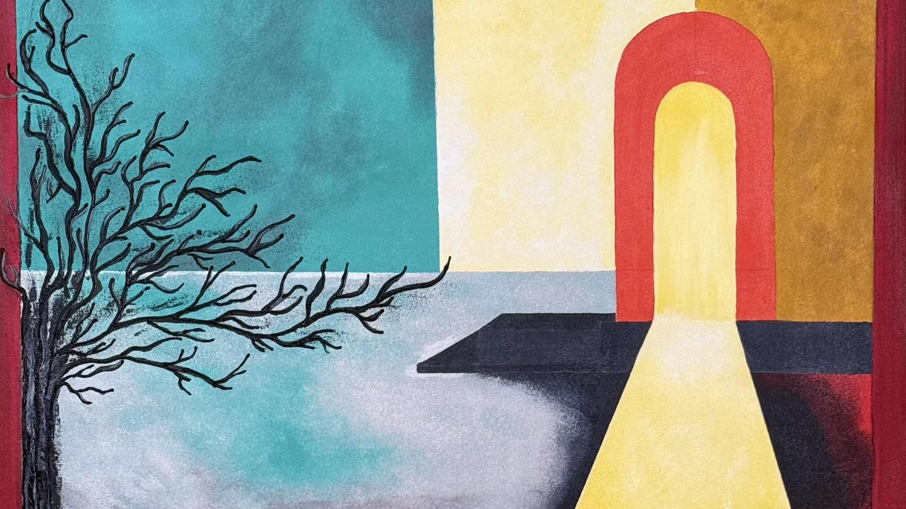

Art in Daily Spaces
Join us for our third annual exhibition featuring the work of local artists in everyday environments. Our goal is to make art more accessible through local community connection and creative expression.
Learn about the exhibitionAbout the Exhibition
Art in Daily Spaces 2026 (ADS 2026) invites local artists to showcase their work in a variety of spaces throughout Annandale, VA, for our third annual ADS exhibition. The initiative integrates art into everyday environments, offering casual visitors and patrons opportunities to encounter, appreciate, and purchase works by local artists at affordable prices. The project’s central goal is to enhance accessibility to art and deepen community enjoyment of creative expression.
ADS will collaborate with participating artists to market the event. In addition, this year’s exhibition will feature an outdoor public art installation created by community members through hands-on workshops. Local residents will come together to discuss their town, share personal stories, and collaboratively create a public artwork that reflects their collective experiences.
Follow for updates on FacebookAnn Farley

I create whimsical paper designs of bright colors & playful shapes, all individually cut by hand. My mandala creations & bold graphic scenes celebrate a sense of place & belonging, and highlight interesting architecture, iconic landmarks, & vibrant community resources. My artwork speaks to joy, peace, & connection. The journeys we take every day - around the world or down the street - offer opportunities for compassion & shared humanity that sustain us.
Beth Baldwin

Bob Carlson

I interpret and reflect upon our prismatic world, often painting in series sharing common motifs and themes that I explore and expand upon, pursuing some over decades. They explore visual elements while often sharing a common subject or narrative aspect as well. I thoroughly enjoy reflecting the people and cultures of our communities. I have been painting scenes of the DMV and beyond for close to 60 years.
DeVante Capers

DeVante Capers is a multidisciplinary artist diagnosed with high functioning autism who uses his artistic talents and different mediums to tell stories through his journey. His main goal is to inspire people with disabilities to achieve their dreams and do the impossible.
Eric Ndofor

Belonging is a lifetime journey (not a destination) shaped by money, movement, and the courage to carry our stories with us. My paintings explore how identity is formed, fractured, and reaffirmed through the movements we make across physical, emotional, and cultural landscapes. Each painting offers a chapter in broader narrative about resilience, longing, and the human need to find a place where we feel seen and rooted. The paintings trace the many paths people take as they search for connection; paths marked by struggle, courage, kinship, and cultural memory. What are your journeys of belonging? Reflect on the places, people, and tradditions that help you feel at home.
Kebao Li

Kebao Li explores line as a living visual language. Inspired by Chinese calligraphy, his works transform line into movement, body, emotion and landscape etc. revealing rhythm, balance, and expressive energy.
Maryam Mustafa

Maryam Mustafa was born and raised in the Washington D.C. area, Annandale, VA. I have roots in Sialkot, Punjab, Atlanta, New York City, and Huntington, Virginia. I'm interested in Islamic spirituality, philosophy, film, and media studies, knowledge, and racial/socio-economic justice. In my research and creative work, I am seeking how to connect memories of mental health, grief, love and loss to social justice, Islam, philosophy and visual and performing arts.
Natalia Serova

My work explores the intersection of everyday reality and vivid imagination. Through my paintings, I aim to transform common spaces into extraordinary emotional landscapes, inviting the viewer to see the hidden beauty in the world around us. I focus on capturing energy and light through bold colors and dynamic forms.
Russ Mardon

My goal with each painting is to create a vivid and realistic piece of art that is beautiful and engaging, while also conveying a strong sense of place and perspective. I often focus on scenes that feature human-made structures—such as a road or building— in a beautiful, natural landscape, rich in patterns of color, shape, and texture. These paintings draw the viewer into the scene by creating a sense of space, highlighting the differences in shape and design between the human-made and natural elements. I use the palette knife, instead of or in addition to brushwork, to create eye-catching textures that bring interest to the surface of the painting itself.
Surya Patil

Art That Tells a Story, One Canvas at a Time. At the heart of my work lies a commitment to creating art that inspires, connects, and endures. Working primarily with acrylics on canvas, I build rich textures and layered compositions that unfold into evocative narratives. Each piece invites viewers to connect personally, finding their own story within the work.